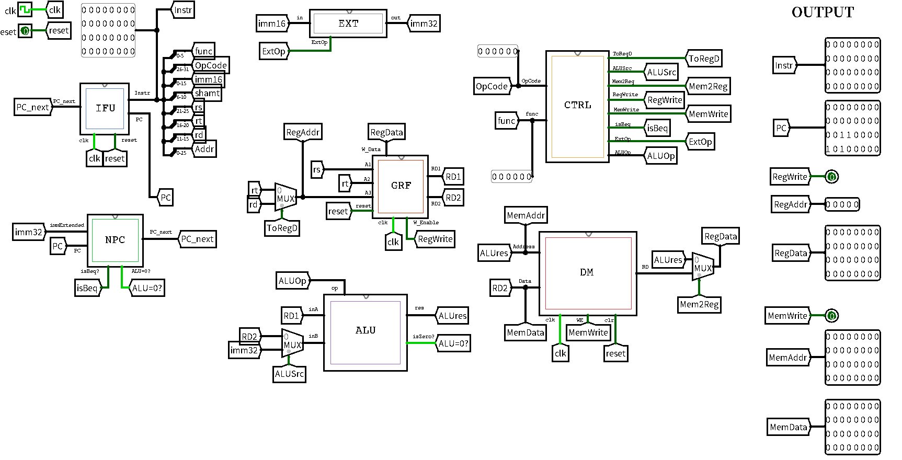
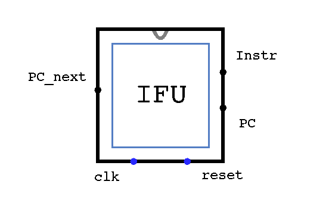
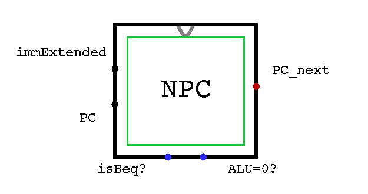
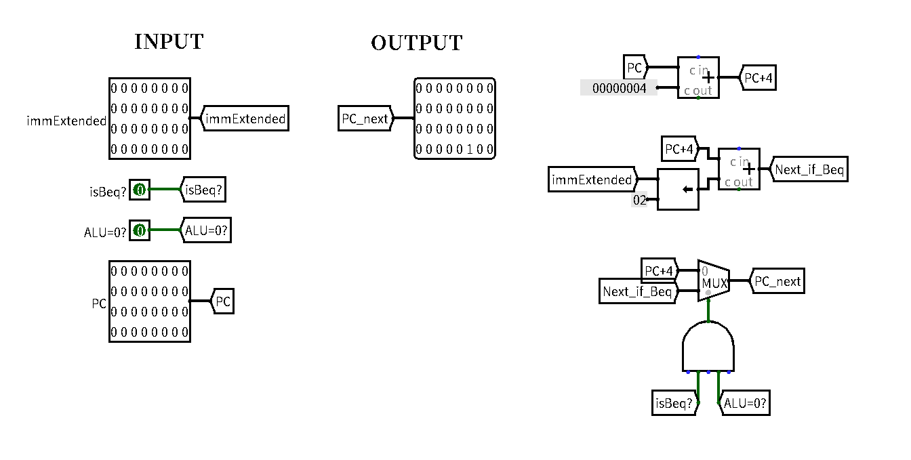
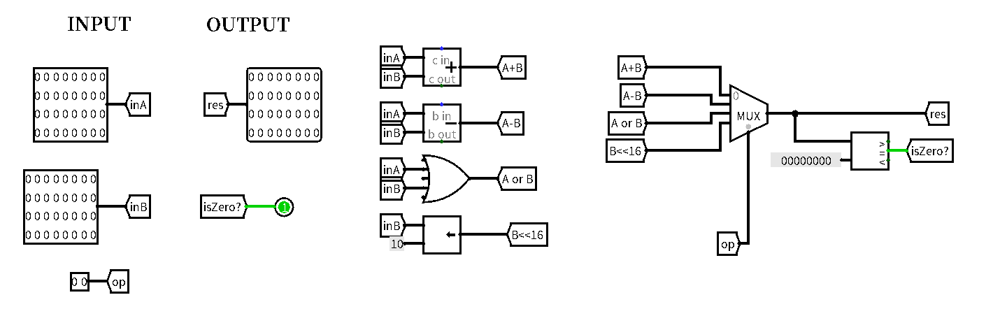
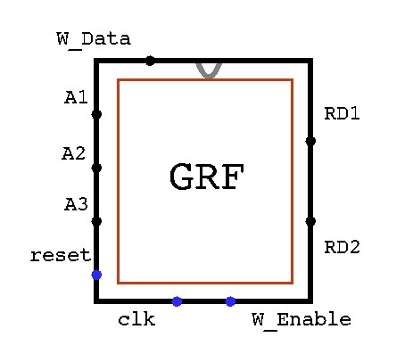
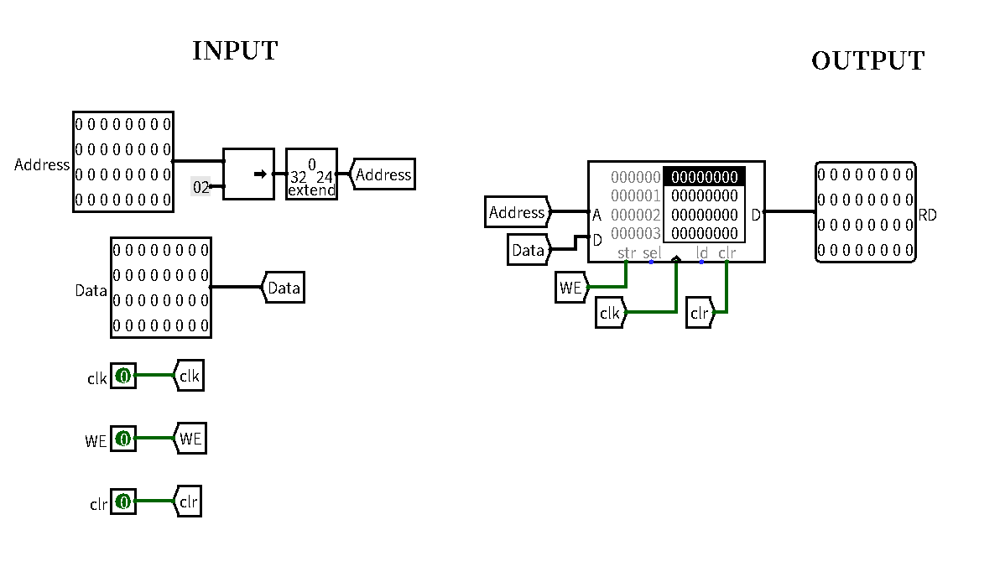
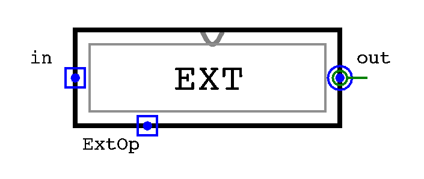
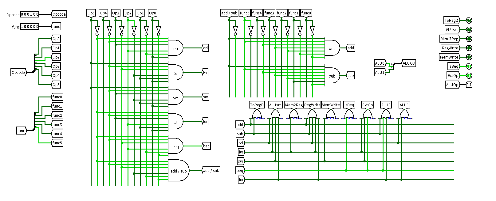

⌈BUAA CO⌋ p3 课下记录
各种事情一拖再拖，留给p3课下的时间非常紧张了。四处翻前辈的博客，终于是集百家之所短完成了本 CPU 的设计。笔者翘了合唱团的排练写下这篇设计文档。
CPU 设计概述
本次的设计的 Logisim cpu 在作业的要求（add，sub，ori，lw，sw，beq，lui，nop）外，并不支持其他的指令。那可拓展空间很大了。
总体采用模块化设计。由于我偏爱 Tunnel，各个模块之间并不像其他人的设计一样复杂交错，而是相当分立。从顶层看说这是个 CPU 都不是很让人信服。

下面我将分模块讲一讲各模块的作用，和一些搭建时的注意点。
IFU: 指令单元

IFU的接口如下：
| 信号名 | 位宽 | 方向 | 备注 |
|---|---|---|---|
clk |
1 | I | |
reset |
1 | I | |
PC_next |
32 | I | 下一条执行指令的地址 |
Instr |
32 | O | 当前执行的指令 |
PC |
32 | O | 当前执行指令的地址 |
其实是将 PC（程序计数器）和 IM（指令存储器）拼接构成。其中 PC 用寄存器实现，IM 通过 ROM 实现。具体连线如下：

这一部分的逻辑可能会让人想起 P0 时搭的有限状态机。寄存器输出的 PC 经过一系列状态转移后得到 PC_next ，然后再重新作用于寄存器。
值得注意的地方有两点：
-
根据题目要求：
PC的初始值是0x00003000，对应的指令存在ROM的0x00000000位置。因此PC需要用一个多路选择器实现等效初始化，而ROM读入的地址应为PC-0x00003000。还有一种写法是内部实现不管题目“初值为
0x00003000” 的要求，直接一一对应。而在顶层面向评测机的输出时加上0x00003000（zhp的写法）应该都可以？ -
可以看到
ROM读入的是PC和ROM计算地址的方式不一样。前者认为每PC除以
NPC: 次地址计算单元

NPC 的接口如下：
| 信号名 | 位宽 | 方向 | 备注 |
|---|---|---|---|
| PC | 32 | I | 当前指令的地址 |
| immExtended | 32 | I | 经过扩展的 32 位立即数 |
| isBeq? | 1 | I | 当前指令是否为 Beq |
| ALU=0? | 1 | I | ALU 计算结果是否为 0 |
| PC_next | 32 | O | 下条指令的地址 |
具体的连线是下面这样。唯一需要注意的地方可能就是 Beq 指令跳转除了加立即数外还要加
J 类型指令后需要大改。

ALU: 计算单元

ALU 的接口如下：
| 信号名 | 位宽 | 方向 | 备注 |
|---|---|---|---|
| inA | 32 | I | |
| inB | 32 | I | |
| op | 2 | I | 运算种类，详情见下表。 |
| res | 32 | O | ALU 运算结果 |
| isZero? | 1 | O | 判断结果是否为
NPC 模块中的 beq 判等。 |
| OP | 操作类型 |
|---|---|
| 00 | A+B |
| 01 | A-B |
| 10 | A or B |
| 11 | B << 16 |
这些肯定是不够的。感觉最好要预留出两位操作指令的空间。

GRF: 寄存器堆

GRF的接口如下：
| 信号名 | 位宽 | 方向 | 备注 |
|---|---|---|---|
| A1 | 5 | I | 地址1，读出寄存器数据到 RD1 |
| A2 | 5 | I | 地址2，读出寄存器数据到 RD2 |
| A3 | 5 | I | 写地址 |
| reset | 1 | I | |
| clk | 1 | I | |
| W_Enable | 1 | I | 写使能信号 |
| W_Data | 32 | I | 写入的内容 |
| RD1 | 32 | O | A1 对应的数据 |
| RD2 | 32 | O | A2 对应的数据 |
实现这边直接复用了P0课下搭的。连线很繁琐，但总得来说没什么好说。

DM: 内存组

DM 的接口如下：
| 信号名 | 位宽 | 方向 | 备注 |
|---|---|---|---|
| Address | 32 | I | 访问的内存地址 |
| Data | 32 | I | |
| clk | 1 | I | |
| WE | 1 | I | 写使能 |
| clr | 1 | I | |
| RD | 32 | O | 读出内存的数据 |
其实就是一个 ROM 。如果加入半字和字节的读写就麻烦了，此处不涉及。

EXT: 扩展单元

用于将
| 信号名 | 位宽 | 方向 | 备注 |
|---|---|---|---|
| in | 16 | I | 原立即数 |
| ExtOp | 1 | I | 扩展类型（1: 符号扩展 | 0: 零扩展） |
| out | 32 | O | 扩展后的立即数 |
大概是最简单的一个部件了。布线如下：

CTRL: 控制器

控制器接口如下：
| 信号 | 位宽 | 方向 | 备注 |
|---|---|---|---|
| Opcode[5:0] | 6 | I | 指令的 31-26 位 |
| func[5:0] | 6 | I | 指令的 5-0 位 |
| ToRegD | 1 | O | 寄存器指示信号（1: 写入rd |
| ALUsrc | 1 | O | ALU功能选择信号（1: 用 immExtended | 0: 用 RD2） |
| Mem2Reg | 1 | O | 寄存器堆数据选择信号（1: 从 DM 写入| 0: 从 ALU 写入） |
| RegWrite | 1 | O | 寄存器堆写入使能信号 |
| MemWrite | 1 | O | DM 写入使能信号 |
| isBeq | 1 | O | 是否是 BEQ 指令 |
| ExtOp | 1 | O | EXT扩展类型（1: 符号拓展 | 0: 0扩展） |
| ALUOp[1:0] | 2 | O | ALU 控制信号 |
控制器可以说是整个CPU的大脑。与逻辑部分确保只有对应指令为通，而或逻辑部分相当于完成了译码的任务，将各指令触发的信号点亮。
连线的时候需要先考虑对应指令需要用到哪些信号，列出真值表，再仔细地完成连接。排线方法参考了先人的博客，总体还算美观。

一个避免连错线的小技巧是先把 Op 和 func 点成指令的样子，然后无脑连亮线就行了。
小结
基本上是照着几篇博客依葫芦画瓢搭出来的，截止日才堪堪做完。计算机组成原理，太困难。
一个小插曲是我第一次提交交错了 .circ 文件的版本，但我没有发现。而是用眼睛盯了很久运行样例时 Logisim 和 MARS 中的情况是否有差别。一小时后我确认没差别，就又交了一发。结果直接过了。
如何提高电路的可维护性、可扩展性，以便上机时提交代码，还需学习。
测试方案
我也尝试着折腾了一下学长们留下的自动化评测脚本，但是始终没有运行成功。最后还是采用了最原始的瞪眼调试法，希望不要出 BUG。
测试流程大概就是：
-
在
MARS里编写MIPS测试程序。我这边使用的程序只是在官方提供的样例基础上做了一定的修改。下面贴出：1
2
3
4
5
6
7
8
9
10
11
12
13
14
15
16
17
18
19
20
21
22
23
24
25
26
27
28
29
30
31
32
33
34
35
36
37
38
39
40
41ori $a0, $0, 123
ori $a1, $a0, 456
lui $a2, 123
lui $a3, 0xffff
ori $a3, $a3, 0xffff
add $s0, $a0, $a2
add $s1, $a0, $a3
add $s2, $a3, $a3
sub $s0, $a0, $a2
sub $s1, $a0, $a3
sub $s2, $a3, $a3
ori $t0, $0, 0x0000
sw $a0, 0($t0)
sw $a1, 4($t0)
sw $a2, 8($t0)
sw $a3, 12($t0)
sw $s0, 16($t0)
sw $s1, 20($t0)
sw $s2, 24($t0)
lw $a0, 0($t0)
lw $a1, 12($t0)
sw $a0, 28($t0)
sw $a1, 32($t0)
ori $t0, $0, 0x0020
sw $a0, 0($t0)
sw $a1, -4($t0)
sw $a2, -8($t0)
sw $a3, -12($t0)
lw $a0, 0($t0)
lw $a1, -12($t0)
ori $a0, $0, 1
ori $a1, $0, 2
ori $a2, $0, 1
beq $a0, $a1, loop1
beq $a0, $a2, loop2
loop1:sw $a0, 36($t0)
loop2:sw $a1, 40($t0)
sub $a1, $a1, $a0
nop
beq $a1, $a2, loop2
nop -
将
.asm文件导出为IFU模块的ROM中导入。 -
一边单步执行
MARS，一边双击Logisim的时钟。观察寄存器、内存的变化和Logisim所示是否一致。
思考题
Q： 上面我们介绍了通过 FSM 理解单周期 CPU 的基本方法。请大家指出单周期 CPU 所用到的模块中，哪些发挥状态存储功能，哪些发挥状态转移功能。
A： 状态存储：PC、GRF、DM 状态转移：NPC、ALU、CTRL
Q： 现在我们的模块中 IM 使用 ROM， DM 使用 RAM， GRF 使用 Register，这种做法合理吗？ 请给出分析，若有改进意见也请一并给出。
A： 还算合理。ROM是只读存储器，数据保有性好，可以用来存储指令；RAM可读可写，满足DM的需求；GRF是寄存器堆，对读写速度要求较高，适合用寄存器实现。
但用ROM存储指令使得CPU变成一次性的了，难以扩展。
Q： 在上述提示的模块之外，你是否在实际实现时设计了其他的模块？如果是的话，请给出介绍和设计的思路。
A： 暂时没有，但有一些在顶层看不够简洁美观的线路（如 Splitter、寄存器选择电路等）也可以被封装一下。
Q： 事实上，实现 nop 空指令，我们并不需要将它加入控制信号真值表，为什么？请给出你的理由。
A： nop的机器码相当于执行 sll $0, $0, 0，执行后没有任何影响。
Q： 阅读 Pre 的 “MIPS 指令集及汇编语言” 一节中给出的测试样例，评价其强度（可从各个指令的覆盖情况，单一指令各种行为的覆盖情况等方面分析），并指出具体的不足之处。
A： 还算全面，但没有测试 offset 为负数的情况。此外，没有测试 nop 指令。